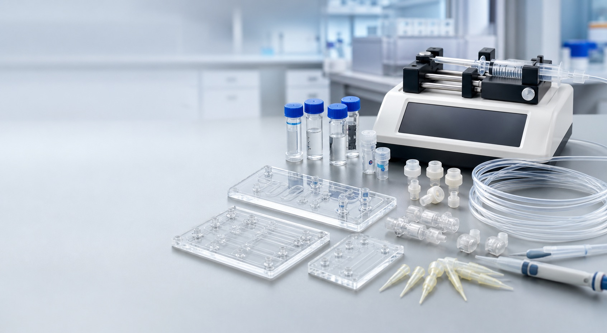
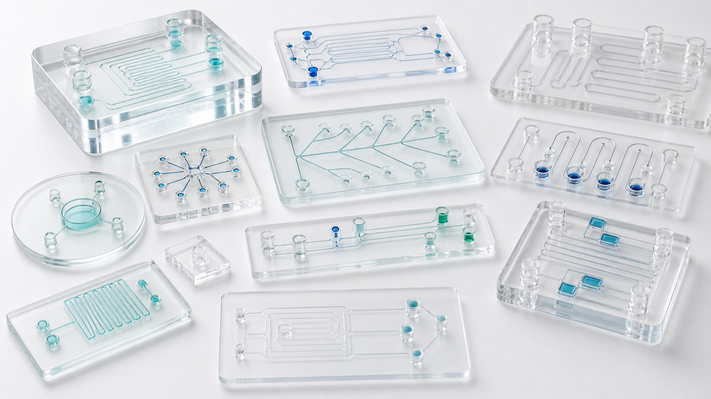
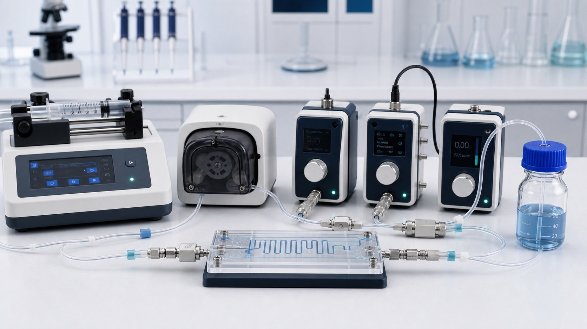
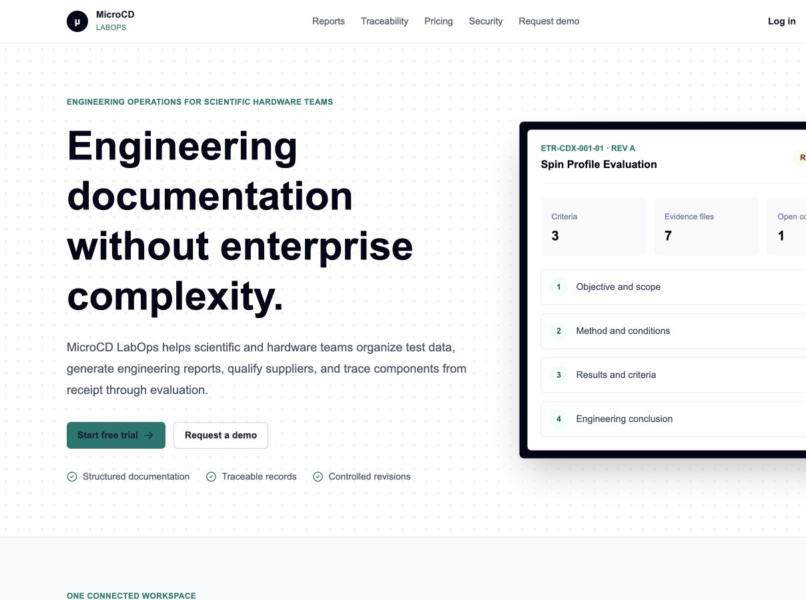

Catalog products are presented for non-clinical research use unless stated otherwise.
Engineering life-science products from concept to commercialization
Build better microfluidic and diagnostic products.
MicroCD Labs brings product engineering, technical sourcing, and development strategy together for biotechnology, medical-device, diagnostic, and research teams.
Evaluate
Engineer
Source
Commercialize

Established2025
HeadquartersAyer, Massachusetts
Core marketsLife sciences · Diagnostics · Research
CompanyA division of Karigari Home LLC
One technical partner, connected disciplines
Practical engineering support for products that move fluids, samples, and decisions.
MicroCD Labs is an early-stage engineering and life-sciences company supporting microfluidic product development, diagnostic technologies, laboratory component sourcing, and mechanical engineering needs.
We help teams evaluate technical options, identify suppliers, coordinate prototypes, and prepare a credible path toward manufacturing and commercialization.
Meet MicroCD LabsStart here
Where is the development work getting stuck?
Start with the technical problem, development stage, or decision your team needs to make.

Product developmentDefine the microfluidic systemTranslate the application into fluidic architecture, interfaces, components, risks, and prototype requirements.

Cartridges and consumablesConnect the assay to the devicePlan sample handling, reagent paths, materials, user steps, and consumable design constraints.

Lab-on-discPlan centrifugal workflowsOrganize fluid movement, chamber functions, timing, actuation concepts, assay steps, and test strategy.

Suppliers and prototypesMove from drawing to buildIdentify parts, fabrication routes, supplier questions, documentation needs, and coordination tasks.
Core services
Focused support across the product-development cycle.
Engagements can begin with a narrow technical review and expand only when the next deliverable is clear.
01Microfluidic product development
Requirements, architecture, component selection, interfaces, risk questions, and prototype planning.
02Diagnostic cartridges and consumablesSample handling, reagent storage, fluid routing, materials, user steps, and disposable design context.
03Lab-on-disc developmentCentrifugal workflow definition, chamber functions, assay timing, and experimental planning.
04Engineering design and prototypingCAD concepts, mechanical interfaces, fixtures, test articles, and fabrication coordination.
05Verification and validation planningRequirement traceability, test strategy, acceptance criteria, data review, and evidence gaps.
06Commercialization and technical consultingDevelopment roadmaps, partner materials, supplier handoffs, troubleshooting, and proposal support.


Beyond the bill of materials
Make the fluidic workflow easier to use.
MicroCD Labs helps equipment teams connect components, operating requirements, and user experience so a research or diagnostic workflow is easier to specify, train, and run.
- 01DefineFlow, pressure, materials, interfaces, and user needs.
- 02ConfigureCompare components, suppliers, and integration options.
- 03SimplifyReduce setup steps and make operation more repeatable.
Engagement process
A defined next step at every stage.
The goal is to reduce uncertainty before expanding scope, spending, or supplier commitments.
- 01Frame the challenge
Clarify the application, current evidence, constraints, and decision that needs to be made.
- 02Define the work product
Agree on the review, requirements, design concept, test plan, supplier package, or prototype objective.
- 03Develop and evaluate
Work through technical options, assumptions, interfaces, risks, data, and practical tradeoffs.
- 04Prepare the handoff
Organize outputs for internal teams, fabricators, suppliers, partners, or the next development phase.
Partnerships
Building the network behind the next generation of diagnostic products.
MicroCD Labs is actively developing relationships with component suppliers, specialist manufacturers, engineering collaborators, and life-science teams.
Software tools
Focused workspaces for engineering and assay development.
Use a purpose-built workspace, or begin with a technical discussion when the workflow still needs definition.

Engineering operationsMicroCD LabOpsOrganize projects, reports, suppliers, components, inspections, and traceability evidence.Open LabOps
Design workspaceMicrofluidic ModelerExplore cartridge geometry, channels, ports, cuts, sketches, and early design concepts.Explore the modeler

Assay analysisKinetic Assay EnhancerReview time-series images, signal trajectories, ROI measurements, and kinetic features.Open the analyzer
Technical perspective
Biomedical R&D experience across diagnostics, assays, and microfluidics.
MicroCD Labs brings doctoral-level research and product-development experience to assay development, lab-on-disc systems, LFIA workflows, microfluidics, and applied engineering programs.
About MicroCD LabsDoctoral-level researchDiagnostics and assay developmentLab-on-disc and microfluidicsApplied product development
Research-led capability
Kinetic image analysis for capillary diagnostic assays.
Our latest preprint explores time-resolved signal extraction, ROI analysis, kinetic features, and endpoint-versus-rate comparison for low-concentration assay interpretation.

Procurement confidence
Technical review before payment.
Final availability, price, lead time, documentation, shipping, and relevant end-use checks are confirmed with the quote.
Manufacturer, material, data-sheet, and compatibility information is included where available.
Destination, end use, paperwork, and shipping requirements are checked before invoicing.
Frequently asked questions
Clear boundaries before work begins.
Initial discussions focus on technical fit, the useful next deliverable, and any specialists or suppliers the project may require.
What types of teams does MicroCD Labs support?
Diagnostic and life-sciences startups, laboratory-product companies, research laboratories, universities, translational teams, and OEM groups working through microfluidic, cartridge, consumable, assay, or integration questions.
What can an initial engagement produce?
Typical early deliverables may include requirements, technical options, a development roadmap, a component or supplier shortlist, CAD concepts, prototype coordination notes, a verification plan, or a focused troubleshooting memo.
Does MicroCD Labs manufacture products?
No in-house manufacturing capacity is claimed. MicroCD Labs can help define requirements, identify suitable fabrication or supply routes, coordinate technical questions, and prepare information for external suppliers.
Can MicroCD Labs support regulated product development?
MicroCD Labs can support early engineering, research-use workflows, requirements, risk questions, and verification planning. Regulatory, clinical, quality-system, and legal activities require separately confirmed scope and appropriately qualified specialists.
Should confidential information be submitted through the website?
No. The initial form should contain only non-confidential context. Do not send trade secrets, patient information, controlled technical data, or sensitive files. An NDA can be discussed separately when appropriate.
A practical next step
Discuss the development challenge.
Share the project type, current stage, technical obstacle, and preferred next step. MicroCD Labs will identify the most practical starting point.